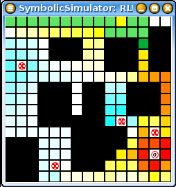

|
|||||||
| [ Home ] | [ Software ] | [ Curriculum ] | [ Hardware ] | [ Community ] | [ News ] | [ Publications ] | [ Search ] |
|
This module provides an overview of reinforcement learning (RL), particularly temporal differencing, using Pyro's RL code in the PyrobotSimulator, a grid world. When completed, the reader should understand how reinforcement learning can be used in robotics. In reinforcement learning, an agent or robot is given a reward or punishment related to the actions that it performs. In supervised learning, a learning agent is given mappings of inputs to desired outputs. In reinforcement learning, no such mapping is given. Instead, the agent must learn how to behave by using the reward or punishment values received. In this module, we will explore reinforcement learning in a grid world. The world contains pits, where the agent receives punishment, and a goal, where the agent will receive a reward. Through exploration of the world, the agent will come upon these squares that provide reinforcements. The program uses temporal differencing to compute utility values for grid locations. Utility values, computed for each grid location, measure the usefulness of being in a particular state or location; the agent tries to maximize its expected utility by moving from squares with lower utility values to squares with higher utility values (except during exploration, explained below). Utility values are updated after each path attempt, whether a pit or a goal was reached. Because of the punishment received for going into a pit, squares around the pit will develop lower utility values than squares around goals. Over time, utility values will be determined for the entire grid, at which point the agent should have learned how to get to the goal without hitting a pit. (In the exercises below, we'll explore how to provide reward in a way that encourages the agent to find the shortest path, not just any path to the goal.) Utility values are updated using the following equation:
U(i) <- U(i) + a(R(i) + U(j) - U(i))
where U(i) is the utility for a given state i, a (alpha) is the learning rate, R(i) is the reward received in state i (in our case, this will be 0 for states that aren't pits or goals), and U(j) is the utility of the next state j. In the screenshot below, the pits are shown as circles with Xs in them and the goal is the G with a circle around it. The path starts from the upper left corner and is shown in green. The darker green square is the current head of the path. Utility values are shown on the grid using color. Blue squares have negative utility; you'll see them around the pits. Positive utility values will be shown from red (highest) through yellow. The path is updated as the program is searching; the utilities are updated after each path is completed.  When learning, we must consider exploration and exploitation. Exploration is when an agent makes some random moves in an attempt to find a better solution to the problem. Exploitation is when an agent follows the path with increasing utilities, even if it may not be the optimal solution. In the exercises below, you'll explore how to change the learning from primarily exploration to primarily exploitation.
Running the CodeThere is one world file, RLWorld.py, and one brain file, RLBrain.py, necessary to use this module. This module uses the PyrobotSimulator. To run the RL code:
To begin learning in the world, click "Run". To randomize the goal and pit locations, type self.robot.tell('reset') and self.reset = 1. The first command will reset the world, and the second sets a flag in the brain class that signals the Temporal Difference code to reset the frequencies, rewards, and utils. In this world, the following are the commands that you can give the robot or world:
These are the commands you can use with the Temporal Difference engine:
These are the commands used to change the current position:
Exercises
from pyrobot.brain import Brain
from time import sleep
from random import *
from pyrobot.brain.td import *
class SimpleBrain(Brain):
random_percent = 20
reset = 0
# reinforcement value for temporal differencing
REINFORCEMENT_VALUE = .2
# just calls find_successor
def find_path( self ):
loc = self.robot.ask('location')
# make sure we got a tuple
if type(loc) != type( () ):
return "";
direction = self.find_successor(loc)
return direction
# finds the next step, by random, utility-based, or direct moves
def find_successor( self, loc ):
valid_state = 0
moves = self.get_valid_moves( loc )
if not moves:
path = self.robot.ask('path')
cx, cy = loc
px, py = path[len(path) - 2]
if px==cx:
if py < cy:
return "up"
else:
return "down"
else:
if px < cx:
return "left"
else:
return "right"
else:
move_type = randrange(0, 100, 1)
if move_type < self.random_percent: # chance of random movement
return moves[ randrange(0,len(moves)) ]
else:
return self.util_successor( loc, moves )
# returns the next location, based on utility values
def util_successor( self, loc, valid_moves ):
# best move will be the move with the highest utility value
best_move = "none"
zero_count = 0
max_util = -999
for m in valid_moves:
# get the state
new_state = self.valid_move( m, loc )
# if we get a valid state, check to see if its the best one yet
if new_state != 0:
util = self.get_util( new_state )
if util == 0.0:
zero_count += 1
if util > max_util:
max_util = util
best_move = m
# make sure we aren't all zero
if max_util == 0 and zero_count == len(valid_moves):
return valid_moves[ randrange(0,len(valid_moves)) ]
# make the move
elif best_move != "none":
return best_move
else:
# should NEVER get here, but just in case!
print "NO GOOD SUCCESSOR FOUND"
return valid_moves[ randrange(0,len(valid_moves)) ]
def get_valid_moves( self, loc ):
valid = []
states = ("up", "down", "left", "right")
for s in states:
if self.valid_move( s, loc ):
valid.append( s )
return valid
#checks to make sure that a move is valid
def valid_move ( self, move, loc ):
(locX, locY) = loc
visited = self.robot.ask('visited')
if move == "up":
new_state = (locX , locY - 1)
elif move == "right":
new_state = (locX+1, locY)
elif move == "down":
new_state = (locX , locY + 1)
elif move == "left":
new_state = (locX-1, locY)
# if the new state is onto an obstacle, return 0
if new_state in self.obstacles:
return 0
# if the new state is off the map, return 0
elif min(new_state) < 0 or max(new_state) > 14:
return 0
elif new_state in visited:
return 0
else:
return new_state
# returns the utility value for a given location
def get_util( self, loc ):
#utils = self.robot.ask('util')
(locX,locY) = loc
if locX < 0 or locX > 14 or locY < 0 or locY > 14:
return -99
else:
return self.td.get_utility(locX, locY)
# gets called before first run
def setup(self, **args):
# set reinforcement value
alpha = self.REINFORCEMENT_VALUE
# get td instance
self.td = Temporal_Difference( 15, 15, self.robot.ask('goal'), self.robot.ask('pits'), alpha )
self.obstacles = self.robot.ask("obstacles")
# initialize the number of iterations to zero
self.count = 0
# run once every iteration
def step(self):
if self.reset == 1:
self.robot.tell("reset")
self.robot.tell("start")
self.setup()
self.reset = 0
# if the goal has not been reached, continue to find a path
if self.robot.ask('complete') == 0:
direction = self.find_path()
self.robot.move( direction )
# if the goal has been reached, display the current path
else:
path = self.robot.ask('path')
self.count += 1
# show the path
print "PATH: ", path
# adjust the utility values of the map
print "Computing TDs: #", self.count, " length: ", len(path)
self.td.do_td( path )
# start a new run
self.robot.tell('start')
for e in path:
# sends the robot a formatted string including the x,y coordinates, and a color
self.robot.tell( self.td.get_utility_color(e[0], e[1]));
alpha = self.td.get_alpha()
if( (self.count % 15) == 0 and alpha > 0 ):
self.td.set_alpha( alpha - 0.01 )
self.random_percent -= 5
def INIT(engine):
return SimpleBrain('SimpleBrain', engine)
|
| [ Home ] | [ Software ] | [ Curriculum ] | [ Hardware ] | [ Community ] | [ News ] | [ Publications ] | [ Search ] |
 View Wiki Source | Edit Wiki Source | Mail Webmaster
View Wiki Source | Edit Wiki Source | Mail Webmaster | |||||||